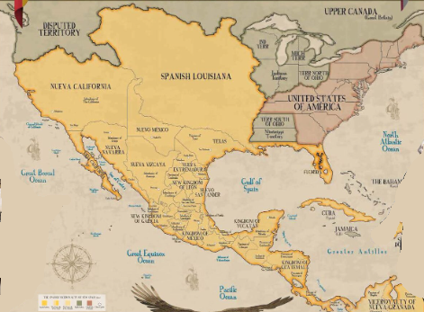
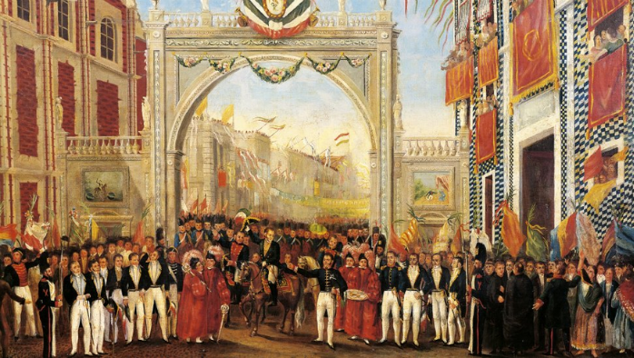

Una lucha por la libertad La Independencia de México fue un proceso histórico que ocurrió entre 1810 y 1821. Su objetivo fue terminar con el dominio español y lograr que México se convirtiera en una nación independiente. Durante este proceso participaron numerosos personajes y ocurrieron acontecimientos que marcaron la historia del país.

¿Por qué comenzó?
Antes de la Independencia, México era una colonia del Imperio español. Existía descontento debido a la desigualdad social, las diferencias entre españoles y criollos, los impuestos y las restricciones económicas.
Además, las ideas de la Ilustración, la igualdad y la libertad influyeron en algunos habitantes de la Nueva España y ayudaron a impulsar el deseo de un cambio.
16 de septiembre de 1810 La madrugada del 16 de septiembre de 1810, el sacerdote Miguel Hidalgo y Costilla llamó al pueblo a levantarse contra el dominio español. Este acontecimiento es conocido como el Grito de Dolores y marcó el comienzo de la lucha por la Independencia.
1810 – 1811 | Miguel Hidalgo
Miguel Hidalgo encabezó las primeras campañas insurgentes. Aunque consiguió reunir a muchos seguidores, las fuerzas insurgentes fueron derrotadas y Hidalgo fue capturado y ejecutado en 1811.
1811 – 1815 | José María Morelos
Después de la muerte de Hidalgo, José María Morelos y Pavón continuó la lucha. Organizó campañas militares y en 1813 convocó el Congreso de Chilpancingo, donde presentó ideas sobre la independencia y la organización de un nuevo país.
1815 – 1820 | Resistencia
Después de la muerte de Morelos, la lucha continuó principalmente mediante grupos insurgentes que resistieron al ejército español. Vicente Guerrero fue uno de los principales líderes que mantuvo vivo el movimiento.

1821 En 1821, Agustín de Iturbide y Vicente Guerrero impulsaron el Plan de Iguala, que proponía la independencia y buscaba unir diferentes grupos. Posteriormente se formó el Ejército Trigarante. El 27 de septiembre de 1821, este ejército entró a la Ciudad de México, acontecimiento que marcó la consumación de la Independencia.
Después de conseguir la independencia, México tuvo que organizarse como una nueva nación y enfrentar problemas políticos y económicos. En 1824 se promulgó la Constitución Federal, que estableció un sistema republicano y federal. El país comenzó así una nueva etapa de construcción de su identidad y organización como nación independiente.
a Independencia de México fue importante porque puso fin al dominio español y dio inicio a la construcción de México como una nación independiente. También se convirtió en uno de los acontecimientos fundamentales de la identidad nacional mexicana.